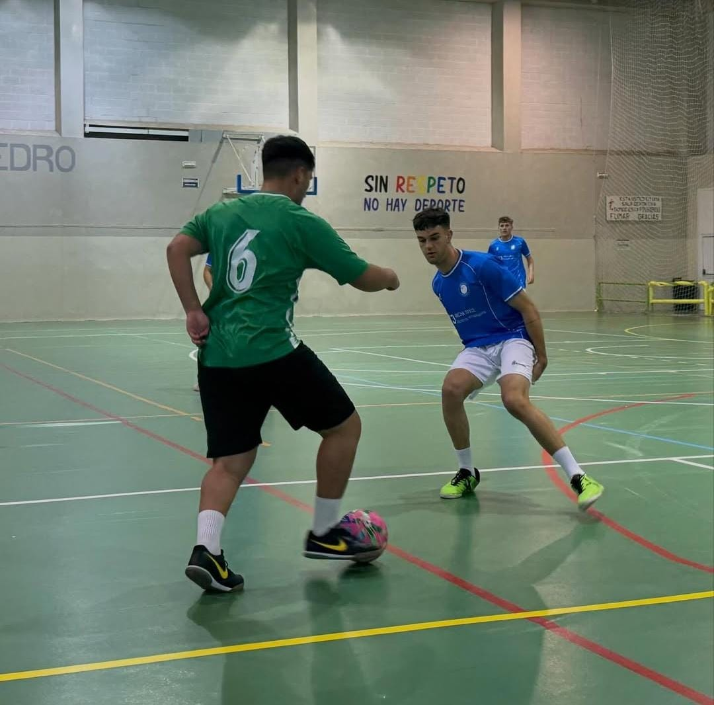
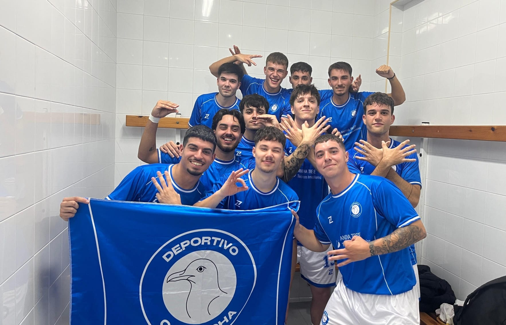
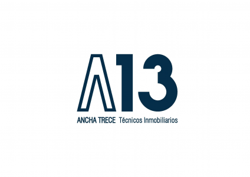
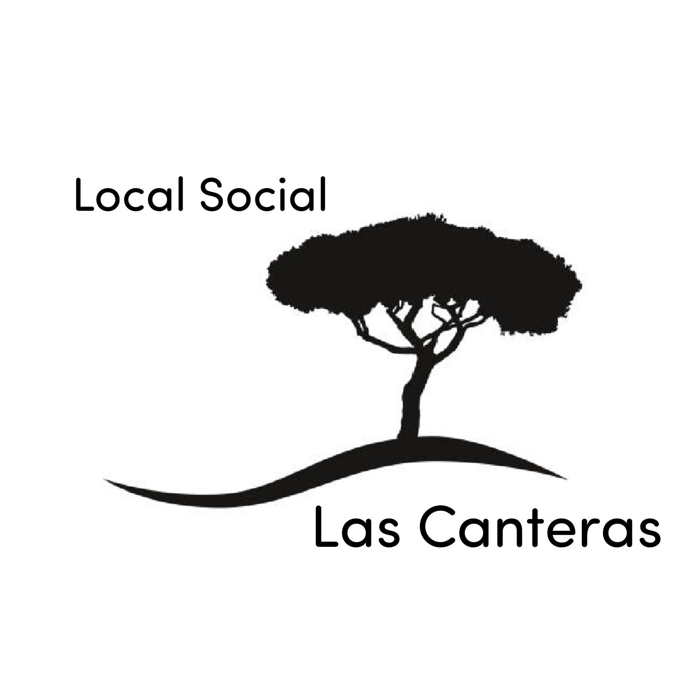
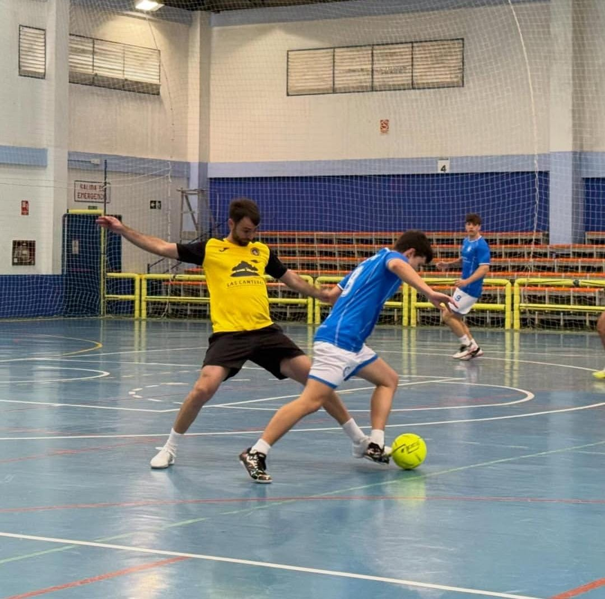
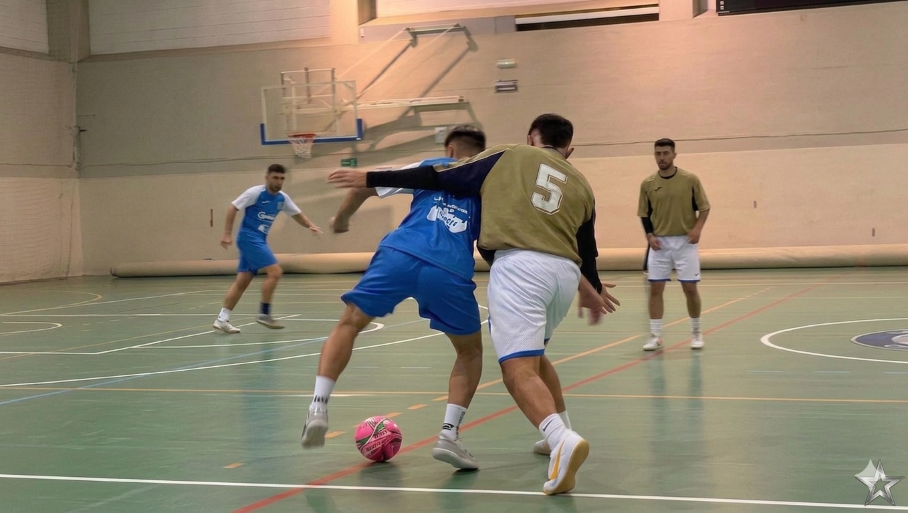

Const. Rey Panorama FS 2-1 Deportivo Cachucha
Goles: Salva 43'

El Deportivo Cachucha nació de la pasión de un grupo de amigos por el fútbol sala. Lo que comenzó como partidos informales entre colegas, se convirtió en un proyecto deportivo que hoy compite en la Liga Local. Desde el primer día, nuestro objetivo ha sido disfrutar del deporte, crear comunidad y representar con orgullo nuestros colores.

Nuestro primer patrocinador fue Ancha 13, una inmobiliaria local que creyó en nuestro proyecto desde el principio. Gracias a su apoyo, pudimos aportar una gran parte de los pagos necesarios para competir al máximo nivel en la liga del pueblo. Su compromiso con el deporte local ha sido fundamental para nuestro crecimiento y éxito. Siempre estaremos eternamente agradecidos por su confianza y apoyo incondicional.

Local Social Las Canteras se unió a nuestro proyecto como segundo patrocinador, aportando su apoyo para cubrir los gastos de las equipaciones del equipo. Su colaboración ha sido esencial para que nuestros jugadores puedan competir con orgullo y comodidad, luciendo los colores del Deportivo Cachucha en cada partido. Agradecemos profundamente su compromiso con el deporte local y su contribución a nuestro crecimiento como club.



texto de ejemplo